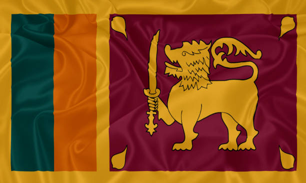

Personal Information


- Full Name: M. Thilakarajah
- Political Party: Independent Party
- Symbol: Bird Feather
- Nationality: Sri Lankan
- Profession: Politician
Political Background and Career
- Political Involvement: M. Thilakarajah is an independent candidate, running for the 2024 presidential election with the *Bird Feather* as his symbol. He is focused on representing the people's needs without party influence.
- Political Platform: His campaign is centered on ensuring transparency, fighting corruption, and prioritizing the voices of the people over corporate or party interests.
Key Focus Areas
- Economic Justice: Promotes fair wealth distribution and financial policies that support the underprivileged communities in Sri Lanka.
- Corruption Control: Committed to fighting political corruption and ensuring a fair, transparent government system.
- People’s Representation: Strong advocate for policies driven by the needs of the common people, free from party affiliations and influences.
Political Achievements
- Independent Leader: As an independent politician, M. Thilakarajah is seen as a voice for the people, advocating for community-driven reforms.
Controversies & Criticisms
- Limited Resources: Running as an independent candidate means M. Thilakarajah faces challenges due to limited political backing and funding compared to major parties.
2024 Political Prospects
- Position in 2024 Elections: M. Thilakarajah is contesting the 2024 presidential election as an independent candidate, with the *Bird Feather* as his symbol. His platform focuses on people-centered governance and anti-corruption policies.
Personal & Family Life
- Family: Information about his family is not widely available.
Visual and Symbolic Representation
- Appearance: Known for his grassroots approach, M. Thilakarajah often appears in simple, traditional attire, reflecting his connection to the people and his political stance.
Color and Branding
- Campaign Symbol: The *Bird Feather*, representing freedom, purity, and a focus on the well-being of the people.
🦂